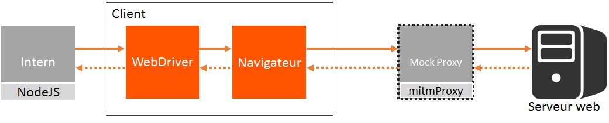

<!DOCTYPE  html>
<html lang="en">
<head>
    <meta charset="utf-8">
    <title>Eagle</title>
    <meta name="apple-mobile-web-app-capable" content="yes"/>
    <meta name="apple-mobile-web-app-status-bar-style" content="black-translucent"/>

    <meta name="viewport" content="width=device-width, initial-scale=1.0, maximum-scale=1.0, user-scalable=no">

    <link rel="stylesheet" href="css/reveal.css">
    <link rel="stylesheet" href="css/theme/orange.css" id="theme">

    <meta http-equiv="X-UA-Compatible" content="IE=edge"/>

    <!-- For syntax highlighting -->
    <link rel="stylesheet" href="//cdnjs.cloudflare.com/ajax/libs/highlight.js/8.4/styles/default.min.css">

    <!-- If the query includes 'print-pdf', include the PDF print sheet -->
    <script>
        if (window.location.search.match(/print-pdf/gi)) {
            var link = document.createElement('link');
            link.rel = 'stylesheet';
            link.type = 'text/css';
            link.href = 'css/print/pdf.css';
            document.getElementsByTagName('head')[0].appendChild(link);
        }
    </script>

    <!--[if lt IE 9]>
    <script src="lib/js/html5shiv.js"></script>
    <![endif]-->

    <script src="//code.jquery.com/jquery-1.10.1.js"></script>
    <script src="http://jschr.github.io/textillate/assets/jquery.lettering.js"></script>
    <script src="http://jschr.github.io/textillate/jquery.textillate.js"></script>

    <link rel="stylesheet" href="http://daneden.github.io/animate.css/animate.min.css"/>


    <script>
        $(function () {
            $('.tlt').textillate({
                in: {effect: 'tada', shuffle: true},
                out: {effect: 'tada', shuffle: true},
                loop: true
            });
        });
    </script>

    <style type="text/css">


        @font-face {
            font-family: 'Rodus';
            src: url('./lib/font/rodus/rodusreg300-webfont.eot');
            src: url('./lib/font/rodus/rodusreg300-webfont.eot?#iefix') format('embedded-opentype'), url('./lib/font/rodus/rodusreg300-webfont.woff') format('woff'), url('./lib/font/rodus/rodusreg300-webfont.svg#Rodus') format('svg');
            font-weight: normal;
            font-style: normal;
        }
    </style>
    <link href="//maxcdn.bootstrapcdn.com/bootstrap/3.3.1/css/bootstrap.min.css" rel="stylesheet">
</head>

<body>
<!-- Wrap the entire slide show in a div using the "reveal" class. -->
<div class="reveal">
    <!-- Wrap all slides in a single "slides" class -->
    <div class="slides">

        <!-- ALL SLIDES GO HERE -->
        <!-- Each section element contains an individual slide -->
        <section>
            <div style="float:left">
                <svg version="1.1" class="logo" x="0px" y="0px" width="294.122px" height="294.618px"
                     viewBox="0 0 294.122 294.618" enable-background="new 0 0 294.122 294.618">
                    <circle class="eye" fill="#ED1D7F" r="15.056" cx="93.329" cy="65.218"/>
                    <path fill="#808285" d="M293.905,81.649c0,0-36.206-2.719-63.162-63.164c-38.125-18.42-65.715-17.372-83.682-18.42
                c-17.968,1.049-45.555,0-83.684,18.42C36.424,78.93,0.216,81.649,0.216,81.649s-12.21,131.38,146.845,212.969
                C306.115,213.029,293.905,81.649,293.905,81.649z M90.537,83.127c0,0-23.151-12.464-32.647-31.458c0,0,39.035,15.729,56.983,20.184
                C111.312,81.349,105.969,82.537,90.537,83.127z"/>
                    <path fill="#A7A9AC" d="M147.058,294.618C306.112,213.029,293.905,81.647,293.905,81.647s-36.209-2.721-63.166-63.163
                C192.276-2.102,147.058,0.065,147.058,0.065s-33.846,56.835-5.522,136.684C176.379,234.969,147.058,294.618,147.058,294.618z"/>
                    <path fill="#E6E7E8" d="M270.797,96.073l12.255,2.495c0,0,4.646,83.676-92.433,157.186
                C190.62,255.754,271.778,187.555,270.797,96.073z"/>
                    <g>
                        <path fill="#FFFFFF" d="M235.547,52.063c0,0-39.036,15.729-56.986,20.184c3.561,9.497,8.903,10.685,24.337,11.274
                    C202.898,83.521,226.051,71.058,235.547,52.063z"/>
                    </g>
                    <g>
                        <path fill="#F8991D" d="M147.061,43.078c30.417,6.062,50.463,58.389,77.238,58.389c0,0-70.628,73.678-77.238,130.412
                    c-6.612-56.734-77.24-130.412-77.24-130.412C96.598,101.467,116.643,49.139,147.061,43.078z"/>
                        <path fill="#FDC37C" d="M147.061,176.28c0.138-48.072,10.13-104.219,10.13-104.219l-10.13-11.75l-10.131,11.75
                    C136.93,72.062,146.922,128.208,147.061,176.28z"/>
                    </g>
                </svg>
            </div>

            <div style="float:left;text-align: left;margin-top:50px;margin-left:50px">
                <h1 style="font-family: 'Rodus'">Eagle</h1>

                <h2 style="font-size:1em; font-family: 'Rodus'" class="tlt">Prend vos bugs en photo !</h2>
            </div>
            <aside class="notes">
                <p>31 ans, marié, 1 enfant, arrivé à Orange en 2010</p>
                <ul>
                    <li>Développeur Expert Front-End</li>
                    <li>Expert Sharepoint</li>
                    <li>Chef de projet technique</li>
                    <li>Passionné par le développpement</li>
                    <li>J'aime partager</li>
                </ul>
            </aside>

        </section>

        <section>
            <h2>Plan</h2>

            <ul>
                <li>Eagle, c'est quoi ?</li>
                <li>Pourquoi ?</li>
                <li>Ses origines</li>
                <li>Comment ça marche ?</li>
                <li>Open source</li>
                <li>Ses évolutions</li>
            </ul>
        </section>

        <section data-background="images/robot.jpeg">
            <section>
                <div class="row">
                    <div class="col-sm-6">
                        <h2 style="font-size:1.5em">L'automatisation des tests, un véritable enjeux</h2>
                    </div>
                </div>
            </section>

            <section >
                <div class="row">
                    <div class="col-sm-6">
                    <h2>Pourquoi ?</h2>
                    <ul>
                        <li>Raccourcissement des délais de production</li>
                        <li>Augmentation de la qualité ...</li>
                        <li>... et des <strong>économies</strong></li>
                    </ul>
                </div>
            </section>
        </section>

        <section>
            <h2><span style="font-family: 'Rodus'">Eagle</span>, <span style="font-size:0.8em">c'est quoi ?</span> </h2>
            <ul>
                <li>
                    Outils d'automatisation de tests basés sur
                    <ul>
                        <li>Selenium</li>
                        <li>Intern, environnement d'exécution de tests</li>
                        <li>Le principe d'<strong>assertions visuelles</strong></li>
                    </ul>
                </li>
                <li>Permet d'<strong>automatiser</strong> les <strong>tests de non regression</strong> des interfaces web</li>
                <li>Ecriture des tests en <strong>Javascript</strong></li>
            </ul>
        </section>
        <section>
            <section>
                <h2>Exemple</h2>
        <pre>
    <code data-trim>
function TypeSearch() {
    return eagle
        .findByCssSelector('.inpt input')
        .type('engineer')
        .end()
        .findByCssSelector('.inpt span')
        .click()
        .end()
        .sleep(2000)
        .captureElementByCssSelector('.jobform-ui','sc/Orange','search-form')
        .captureElementByCssSelector('.joblist','sc/Orange','results');
}
    </code>
        </pre>
            </section>
            <section>
                <h3>1ere exécution: la référence</h3>
                
            </section>
            <section>
                <h3>2eme exécution: l'image actuelle</h3>
                
            </section>
            <section>
                <h3>Image différentielle générée</h3>
                
            </section>
        </section>
        <section>
            <section>
                <h2>Pourquoi ?</h2>
                <ul>
                    <li>Peu ou pas de produit similaire sur le marché</li>
                    <li>Besoin d'automatisation sur Orange Office ...</li>
                    <li>... Et plus généralement pour les applications web responsive</li>
                    <li>Maximiser la valeur ajoutée des tests manuels</li>
                </ul>
            </section>
            <section>
                <h2>D'où vient l'idée ?</h2>
                <div class="row">
                    <div class="col-sm-6">
                        <a href="http://responsivenews.co.uk/post/56884056177/wraith" target="_blank">Wraith</a>, développé par l'équipe de développement de BBC News pour détecter les regressions visuelles
                    </div>
                    <div class="col-sm-6">
                        
                    </div>
                </div>
                <div class="row" style="margin-top:30px">
                    <div class="col-sm-6">
                        
                    </div>
                    <div class="col-sm-6">
                        <a href="https://github.com/facebookarchive/huxley">Huxley</a>, développé chez Instagram, permet aussi d'enregistrer et de rejouer facilement des scénarios
                    </div>
                </div>
            </section>
            <section>
                <h2>Retours d'expériences difficiles</h2>
                <ul>
                    <li>Difficultés à piloter les tablettes et mobiles de manière fiable et automatisée</li>
                    <li>Maîtrise de l’ensemble des composantes d'un produit (interface et backends)</li>
                    <li>Tests qui détectent de vrais erreurs</li>
                    <li>Maintenance des tests</li>
                </ul>
            </section>
        </section>
        <section>
            <h2>Exigences de départ</h2>
            <ul>
                <li>Les charges d’écriture et de maintenance des tests doivent être raisonnables</li>
                <li>Les tests doivent être reproductibles et fiables</li>
                <li>
                    L’exécution des tests doit être intégrée (Hudson/Jenkins)
                    <ul>
                        <li>Exécution périodique et à la demande des tests</li>
                        <li>Consultation des rapports de tests</li>
                        <li>Notification par mail</li>
                    </ul>
                </li>
            </ul>
        </section>
        <section data-background="#FFFFFF">
            <section data-background="images/interrogation.jpg">
                <div class="row">
                    <div class="col-sm-4"></div>
                    <div class="col-sm-8">
                        <h2>Comment ça marche ?</h2>
                    </div>
                </div>
            </section>
            <section>
                <h2>Son fonctionnel</h2>
                <ul>
                    <li>Comparaison de <strong>captures d’écrans partielles</strong> avec un référentiel, si différence, assertion fausse</li>
                    <li><strong>Génération automatique</strong> des références à la 1ere exécution</li>
                    <li>Mise à jour des assertions simplement en supprimant les références</li>
                    <li>Maintien des référentiels dans une <strong>gestion de configuration</strong> (SVN)</li>
                </ul>
            </section>
            <section>
                <h2>Architecture logicielle</h2>
                
            </section>
            <section>
                <h2>Architecture technique</h2>
                
            </section>
            <section>
                <h2>Recommandations</h2>
                <ul>
                    <li>Utiliser <strong>seulement</strong> des navigateurs PC (Chrome, Firefox, …)</li>
                    <li><strong>Emuler</strong> les spécificités mobiles et tablettes (user agents, touch, …)</li>
                </ul>
            </section>
        </section>

        <section data-background="images/opensource.png">
            <section>
                <div class="row">
                    <div class="col-sm-7">
                        <h2>Un outil de la communauté</h2>
                        <ul>
                            <li>Produit développé à la base pour Orange Office</li>
                            <li>Mais qui concerne n'importe quel projet web</li>
                            <li>On a donc décontextualisé le produit</li>
                        </ul>
                    </div>
                </div>
            </section>
            <section>
                <div class="row">
                    <div class="col-sm-7">
                        <h3 style="text-align: left">Don à la communauté pour</h3>
                        <ul>
                            <li>Pour le maintenir, le faire évoluer</li>
                            <li>Pour lui donner de la visibilité</li>
                            <li>Cultiver la volonté d'Orange de faire de l'open source</li>
                        </ul>
                    </div>
                </div>
            </section>
        </section>
        <section data-background="#FFFFFF">
            <section>
                <h2>Evolutions envisagées</h2>
            </section>
            <section>
                <h3>Proxification des requêtes avec mitmProxy</h3>
                <ul style="font-size: 0.8em;">
                    <li>
                        Rendre fiable et reproductible les tests en isolant l’interface des backends.Utilisation d’un proxy spécifique qui :
                        <ul>
                            <li>
                                Enregistre les requêtes lors du premier lancement du test<br/>
                                <div style="text-align: center"></div>
                            </li>
                            <li class="fragment">
                                Rejoue les requêtes les fois suivantes<br/>
                                <div style="text-align: center"></div>
                            </li>
                        </ul>
                    </li>
                </ul>
            </section>
            <section>
                <h2>Support de GIT</h2>
            </section>
        </section>
        <section data-background="#FFFFFF">
            <a href="http://orange-opensource.github.io/Eagle/">http://orange-opensource.github.io/Eagle/</a>
        </section>
        <section data-background="#FFFFFF" >
            <h2>Merci à vous !</h2>
        </section>

    </div>
</div>
<script src="lib/js/head.min.js"></script>
<script src="js/reveal.min.js"></script>

<script>
    // Required, even if empty.
    Reveal.initialize({
        history: true,
        transition: 'slide',
        slideNumber: true,
        dependencies: [
            {
                src: 'lib/js/classList.js', condition: function () {
                return !document.body.classList;
            }
            },
            {
                src: 'plugin/markdown/marked.js', condition: function () {
                return !!document.querySelector('[data-markdown]');
            }
            },
            {
                src: 'plugin/markdown/markdown.js', condition: function () {
                return !!document.querySelector('[data-markdown]');
            }
            },
            {
                src: 'plugin/highlight/highlight.js', async: true, condition: function () {
                return !!document.querySelector('pre code');
            }, callback: function () {
                hljs.initHighlightingOnLoad();
            }
            },
            {
                src: 'plugin/zoom-js/zoom.js', async: true, condition: function () {
                return !!document.body.classList;
            }
            },
            {
                src: 'plugin/notes/notes.js', async: true, condition: function () {
                return !!document.body.classList;
            }
            },
            {src: 'plugin/notes-server/client.js', async: true}
        ]

    });
</script>
</body>
</html>